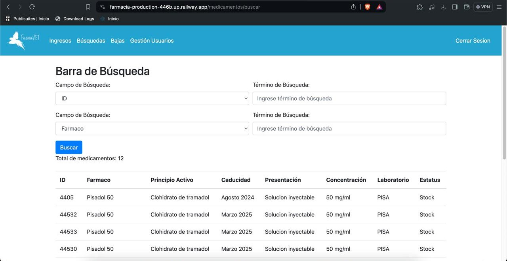
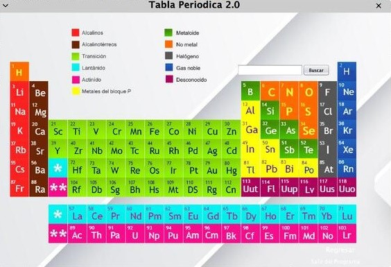
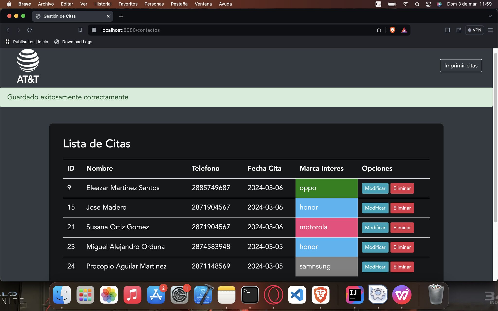
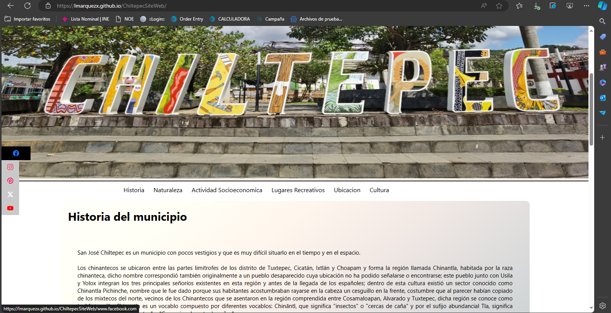

Soy estudiante de último año de Ingeniería en Sistemas Computacionales, especializado en desarrollo de aplicaciones en Java y con experiencia en desarrollo web y bases de datos. Domino el uso de comandos en CMD y Terminal de Linux, habiendo trabajado con distribuciones como Ubuntu, Linux Mint, Elementary, Zorin OS y macOS.
Hola, mi nombre es Luis Ángel y tengo una gran pasión por la programación. Tengo afinidad por lenguajes como Java y C++. Mi interés en la programación comenzó en la preparatoria, cuando me inscribí en la carrera de Técnico Programador, donde aprendí sobre el desarrollo de aplicaciones de escritorio, aplicaciones web, bases de datos y programación orientada a objetos.
Durante mi educación universitaria, profesionalicé mis conocimientos en el desarrollo de aplicaciones y me especialicé en la programación backend, utilizando Java con frameworks como Spring y Angular.
He desarrollado proyectos tanto para uso personal como para empresas que requieren mis servicios como programador, soporte técnico o reparación. No tengo miedo de intentar cosas nuevas y disfruto enfrentando retos.
Sistema Gestor de medicamentos, proyecto ralizado a una reserva ecologica con servicio de veterinaria para los animales del lugar, haciendo el manejo de los medicamentos mas accesible a los veterinarios.
Proyecto de ciencias creado para impulsar el aprendizaje en alumnos de 2do semestre del CBTis 107 de la ciudad de Tuxtepec Oaxaca.
Proyecto de ciencias creado para impulsar el aprendizaje en alumnos de 2do semestre del CBTis 107 de la ciudad de Tuxtepec Oaxaca.
Proyecto de ciencias creado para impulsar el aprendizaje en alumnos de 2do semestre del CBTis 107 de la ciudad de Tuxtepec Oaxaca.
